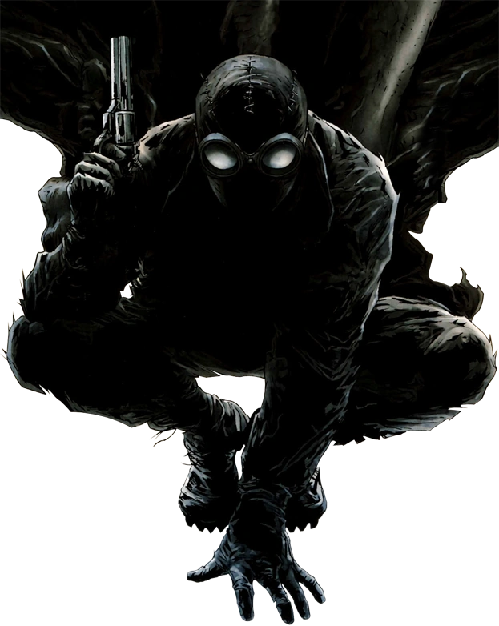

Habilidades Físicas e Corporais
- Força Proporcional à de uma Aranha Nível suficiente para erguer grandes pesos, estilhaçar portas e nocautear criminosos facilmente em lutas corporais.
- Agilidade e Reflexos Capacidade de realizar saltos acrobáticos e desviar de ataques ou disparos inimigos com alta precisão.
- Aderência em Superfícies Habilidade de escalar e se pendurar em paredes e tetos de edifícios sem auxílio de equipamentos.
- Teias Orgânicas Produção natural e disparo de teias direto dos pulsos, sem precisar de lançadores mecânicos.
